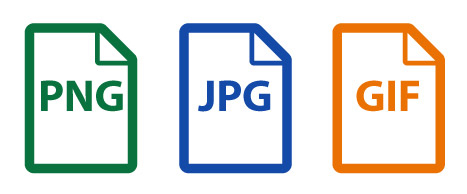

Definición de PNG, JPG y GIF
PNG:
PNG es un formato de compresión SIN pérdida. Sus siglas corresponden a Portable Network Graphics e inicialmente se creó para resolver los defectos y problemas del formato GIF.Una característica muy importante de este formato es que soporta transparencias, a diferencia de JPG que siempre tendrá un fondo de color sólido. Los PNG son el formato ideal para las imágenes sin fondo, las imágenes que contengan texto y los logotipos. También incluimos en esta categoría los dibujos lineales, que tendrán mucha más calidad en PNG que en JPG. PNG es el formato ideal, y el que más se usa para la web y el online cuando quieres mantener una calidad muy alta.
JPG:
JPG es un formato de compresión de imágenes CON pérdida. Esto significa que pierde calidad cada vez que reduces su tamaño. Debes saber que la pérdida de calidad es acumulativa: si comprimes la imagen y luego la descomprimes ya habras perdido calidad, y si repites el proceso la imagen irá perdiendo calidad progresivamente.
GIF:
Fue olvidado hace un tiempo aunque ahora es mucho más usado, actualmente, porqué permite crear imágenes en movimiento. De hecho, su principal característica es que soporta animaciones, pero también soporta transparencias y paletas de 256 colores.
